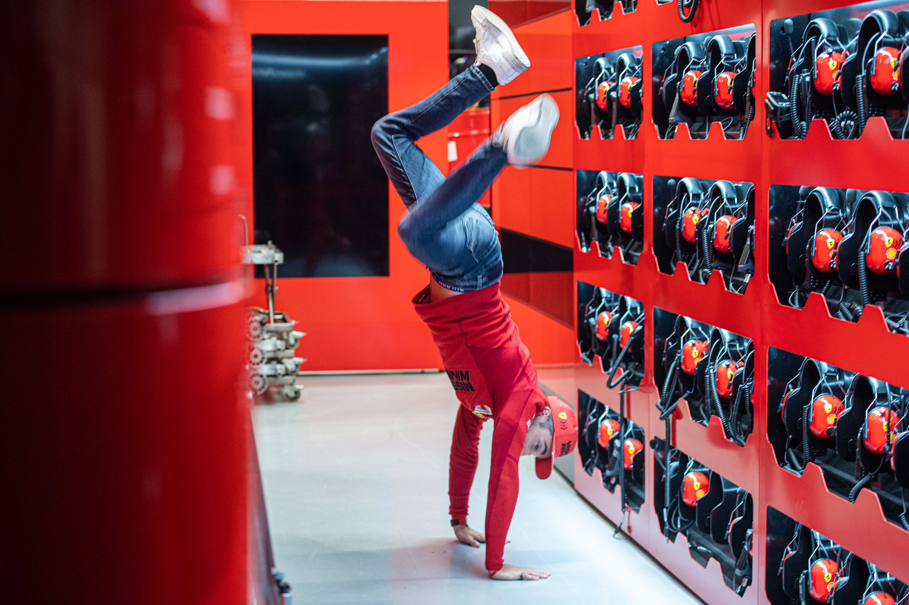

Class of Formula 1 2021 with the absence of driver 9 (Nikita Mazepin)
The Historical 72nd Formula One World Championship marked the end of total championship domination of Mercedes in V6 Turbo hybrid era (which started in 2014) as Redbull's Max Verstappen wins the Driver's Championship title–the first in his Career. With 3 rookies on the grid, the return of former world champion, Fernando Alonso, Team changes for Sergio Perez, Daniel Ricciardo, and Carlos Sainz here is the daring grid of the 2021 season.
As the 2022 Grid has recently been announced, the sport bids farewell to Alfa Romeo drivers, Antonio Giovananzzi and Kimi Räikkonen. Driver order is based on the their championship standings
33 Max VerstappenVerstappen at the Abu Dhabi GP Podium, Image from Twitter
Championship Points: 395.5
Team: Redbull Racing
Country: Netherlands
Podiums: 60
Career Points: 1557.5
Date of Birth: 30/09/1997
Place of birth: Hasselt, Belgium
44 Lewis HamiltonLewis Hamilton qualifying reaction at the Abu Dhabi GP, Image from the FIA
Championship Points: 387.5
Team: Mercedes AMG F1
Country: United Kindom
Podiums: 182
Career Points: 4165.5
Date of Birth: 07/01/1985
Place of birth: Stevenage, England
77 Valtteri BottasBottas at Interlagos Circuit podium, Image from CNN Sports
Championship Points: 226
Team: Mercedes AMG F1
Country: Finland
Podiums: 67
Career Points: 1738
Date of Birth: 28/08/1989
Place of birth: Nastola, Finland
11 Sergio PerezPerez taking 3rd at the 2021 Mexican GP, Image from the FIA
Championship Points: 190
Team: Redbull Racing
Country: Mexico
Podiums: 15
Career Points: 896
Date of Birth: 26/01/1990
Place of birth: Guadalajara, Mexico
55 Carlos SainzSainz at the 2021 Abu Dhabi Podium placing third, Image from FIA on twitter
Championship Points: 164.5
Team: Ferrari
Country: Spain
Podiums: 6
Career Points: 536.5
Date of Birth: 01/09/1994
Place of birth: Madrid, Spain
4 Lando NorrisNorris media day, Image from FIA
Championship Points: 160
Team: McLaren
Country: United Kingdom
Podiums: 5
Career Points: 306
Date of Birth: 13/11/1999
Place of birth: Bristol, England
16 Charles Leclerc

Leclerc at the Ferrari Paddock, Image from @ScuderiaFerrari on Twitter
Championship Points: 159
Team: Ferrari
Country: Monaco
Podiums: 13
Career Points: 560
Date of Birth: 16/10/1997
Place of birth: Monte Carlo, Monaco
3 Daniel RicciardoRicciardo shoey in Monza, Image from FIA
Championship Points: 115
Team: McLaren
Country: Australia
Podiums: 32
Career Points: 1274
Date of Birth: 01/07/1989
Place of birth: Perth, Australia
10 Pierre GaslyGasly at 2021 Azerbaijan GP Podium, Image from FIA